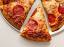

Pizza Recipe
A homemade pepperoni pizza recipe!
Want to make small pepperoni pizzas for you or your kids/family? Try this recipe to make a delicious personal pepperoni pizza!
Ingredients
Contadina Quick Pizza Sauce:
- 1/2 cup of water
- 1/2(12oz) can CONTADINA Tomato Paste
- 1 teaspoon dried oregano, crushed
- 1 teaspoon dried basil, crushed
- 1/2 teaspoon garlic powder
- 1/2 teaspoon onion powder
- 1/2 teaspoon sugar
- 1/2 teaspoon salt
- 1/4 teaspoon black pepper
Fleischmann's Easy Pizza Crust:
- 3 1/4 cups all-purpose flour, or more as needed
- 2(.25oz) envelopes FLEISCHMANN'S Pizza Crust Yeast or RapidRise Yeast
- 1 tablespoon sugar
- 1 1/2 teaspoons salt
- 1 1/3 cups very warm water(120 degrees F to 130 degrees F)
- 1/3 cup oil
Toppings:
- 1 cup shredded mozzarella cheese, or more to taste
- 1(6oz) package HORMEL Pepperoni
Steps
- Preheat the oven to 425 degrees F (220 degrees C). Grease two 12-inch pizza pans.
- Make sauce: Whisk together water, tomato paste, oregano, basil, garlic powder, onion powder, sugar, salt, and pepper in a medium bowl until smooth. Set aside.
- Make crust: Combine 2 cups flour, yeast, sugar, and salt in a large bowl. Add warm water and oil; mix until well blended, about 1 minute. Gradually add remaining flour, a little at a time, until a soft, sticky dough forms.
- Transfer dough to a floured surface; knead until dough is smooth and elastic, about 4 minutes. Add more flour as needed. (If using RapidRise yeast, let dough rest, covered, for 10 minutes.)
- Divide dough in half. Lightly flour your hands, then pat each piece of dough onto the prepared pizza pans.
- Top dough with sauce, cheese, and pepperoni.
- Bake in the preheated oven until crusts are browned and cheese is bubbly, 18 to 20 minutes. Rotate pizza pans between the top and bottom oven racks halfway through baking.